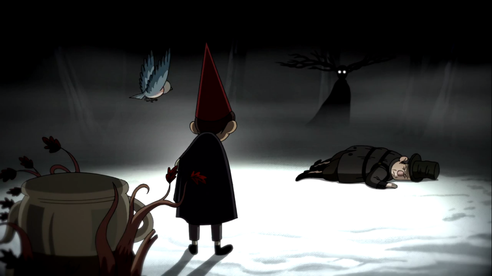
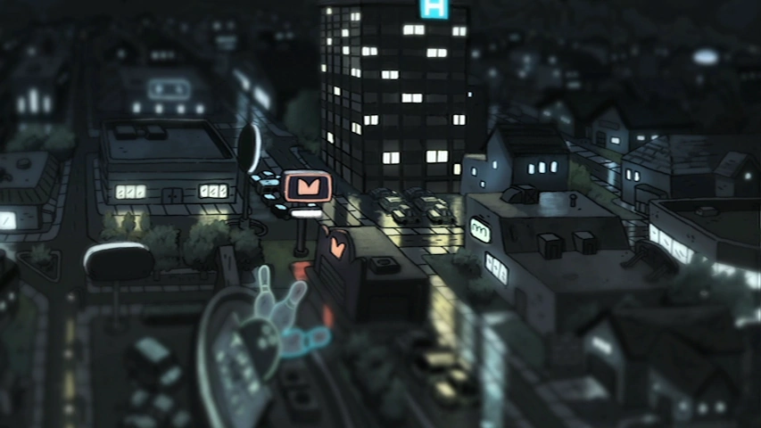

Episode 9: "Into the Unknown (chapter)" After Wirt collapses in the cold, we get a flashback to before he and Greg came into The Unknown. It's revealed that Greg and Wirt are actually from our world in the mid-nineties, and the clothes they are wearing are Halloween costumes. Wirt is infatuated with a girl named Sara, and in the process of trying to get back a cassette tape from her, Wirt and Greg fall down a hill and into a lake.Wirt awakens to find himself and Greg's Frog in a tree with Beatrice's mother and other family members. He leaves to search for his brother. This episode is a prequel to the whole story, it explains how they get to the unknown. The story begins with Wirt pacing around his room, holding a cassette tape labeled "For Sara," which he throws in frustration. He then creates a Halloween costume and meets his brother Gregory at a football field, where Greg takes the tape and runs to give it to Sara. Wirt panics, trying to get it back, but ends up at a Halloween party where Sara and her friends listen to the tape with Jason Funderberker. The police arrive, and Wirt and Greg escape, falling into a lake and passing out. They wake up in the Unknown, where Wirt meets Beatrice's family and sets off with the frog. Trivia This episode finally reveals the reason Greg is wearing a teapot on his head: it's his elephant costume for Halloween (the spout is the trunk). Quotes Greg: Goodbye! Thank you, Old Lady Daniels! Old Lady Daniels: Goodbye, Gregory. And please don't call me old lady. Greg: Yes sir, young man! 1 / 5 2 / 5 3 / 5 4 / 5 5 / 5 ❮ ❯
Episode 10: "The Unknown (chapter)" The Beast has come. The final chapter begins. Beatrice is searching for Greg in the forest, where she finds him fulfilling the seemingly impossible tasks assigned to him by the Beast. Beatrice tries to call Greg but is pushed away by the wind. The Beast assigns Greg the last task of getting the sun and placing it in a teacup, which Greg fulfills by placing the teacup on a tree stump and claiming that the sun would land inside it at sunset. The Beast tricks Greg into sitting in the cold, waiting for the sun. Beatrice and Wirt find Greg, and the Woodsman finds two edelwood branches but fails to grind them into oil. The Beast reveals his 'gift' to the Woodsman, which is Greg encased in new edelwood branches. The Beast tries to convince the Woodsman to grind Greg into oil, but he refuses and tries to free the boy instead. The Beast taunts the Woodsman, causing him to become enraged and attempt to attack him. Wirt and Beatrice try to break Greg free, but the Woodsman collapses nearby, defeated by the Beast. The Beast tries to make a deal with Wirt to place Greg's soul inside the lantern, but Wirt refuses, leading to the Beast's demise. Wirt wakes up in the pond with Greg and his frog, and they are taken to the hospital. Sara finds a tape recorder, and they listen to Greg's stories about their adventures in the Unknown. As the story ends, scenes of the Unknown are viewed, mirroring those that appeared in the first episode. Trivia At the end, there is a brief shot of Aberdale, the main setting of Clarence, another Cartoon Network show. 1 / 5 2 / 5  3 / 5 4 / 5  5 / 5 ❮ ❯